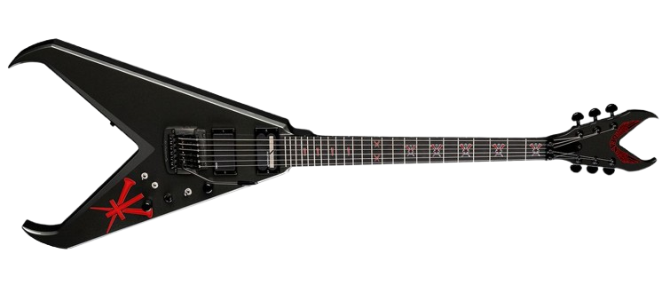

El Indie Rock es un género musical que valora la independencia y la experimentación.
Es conocido por sus guitarras atmosféricas, letras introspectivas y melodías pegadizas, abarcando desde el post-punk revival hasta el dream pop.
VOLVER ARCTIC MONKEYS THE STROKES THE KILLERS FOO FIGHTERS KINGS OF LEON 